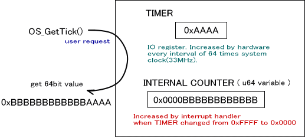

時間を計測するためのシステムとしてチックシステムが用意されています。チックシステムは、4つある 16bit ハードウェアタイマのうち１つを用いて、64ビット長のチックを実現したものです。チックは一定の時間でカウントアップされる値です。
初期化
チックシステムを使用するときは OS_InitTick() を呼んでください。なお、アラームシステムを使用する際にはチックシステムが必須となっています。( アラームシステムの初期化 OS_InitAlarm() より先に OS_InitTick() を呼ぶ必要があります。)
チックシステムが使用可能かどうかは OS_IsTickAvailable() で調べることが出来ます。
チック値の取得
チック値を取得する関数としては OS_GetTick() 、 OS_GetTickLo() が用意されています。
ハードウェアタイマは16bit のカウンタが1周するごとに割り込みを発生させます。チックシステムでは割り込みが発生する度にシステム内部に保持している u64 型変数をインクリメントします。
チック値を取得するためにユーザが OS_GetTick() を呼ぶと、ハードウェアタイマの 16bit の値と、内部で保持している u64型変数の下位
48bit の値から生成した 64bit の値を返します。

OS_GetTickLo() は タイマの部分だけを取得する関数です。この値は 16bit 値です。
チック値は最初に OS_InitTick() が呼ばれたときに 0 となります。
その後、内部では16bit タイマカウンタとそのタイマのオーバーフロー割り込みを使用してチック値を更新します。
そのため、このタイマカウンタの１周分(65536 * OS_SYSTEM_CLOCK / 64 Hz、約7.5フレーム)より長い期間割り込み禁止状態にするとカウンタの繰り上がりが失われ、
その前後のチック値の差分に不整合が起こるという点に注意してください。
チック値の設定
チック値を設定する関数としては OS_SetTick() が用意されています。
アラームを設定している場合にチック値をアプリケーションから設定すると、アラームシステムに不具合が生じる場合がありますので、むやみに変更しないことを推奨します。
チック値と実時間の変換
ハードウェアタイマの1カウントは、設定によりシステムクロック(約33MHz) の64分周となっています。チックシステムのの1カウントも同様です。
この設定から計算すると、カウンタ値と実際の時間の関係は次のようになります。64bit
値で考える限り、またゲーム中にチックシステムをリセットしない限り、初期化後に同じ値を返すことはないものと見なしてよいでしょう。
| チック値 | 実時間 |
|---|---|
| 1 | 約64/33514000 秒 |
| 0x100 (8bitを一周) | 約0.0004887秒 = 約0.03フレーム |
| 0x10000 (16bitを一周) | 約0.125秒 = 約7.5フレーム |
| 0x100000000 (32bitを一周) | 約8200 秒 = 約2時間17分 |
| 0x10000000000000000 (64bitを一周) | 約112万年 |
チック値と実時間の変換関数は以下の通りです。
実時間から、チック値に変換する関数 (マクロ)
OS_MicroSecondsToTicks*(), OS_MilliSecondsToTicks*(), OS_SecondsToTicks*()
チック値から実時間に変換する関数 (マクロ)
OS_TicksToMicroSeconds*(), OS_TicksToMilliSeconds*(), OS_TicksToSeconds*()
使用するハードウェアタイマ
チックシステムはタイマ 0 を用います。このタイマチャンネルは、アプリケーションで使用することは出来ません。OS
のタイマ関数では、DEBUGビルドのときに SDK_ASSERT によるチェックを行ないます。
2004/12/13 用語や語尾など修正
2004/11/05 初版